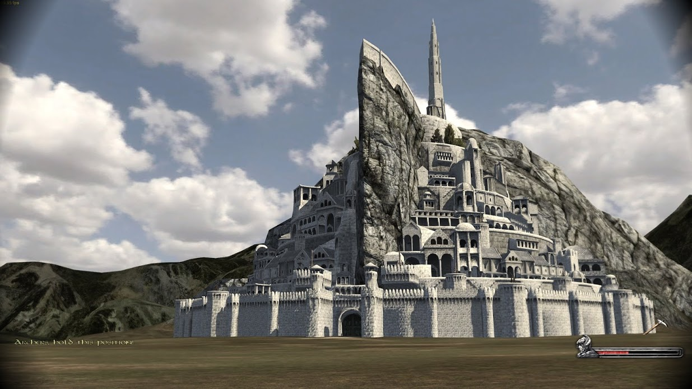
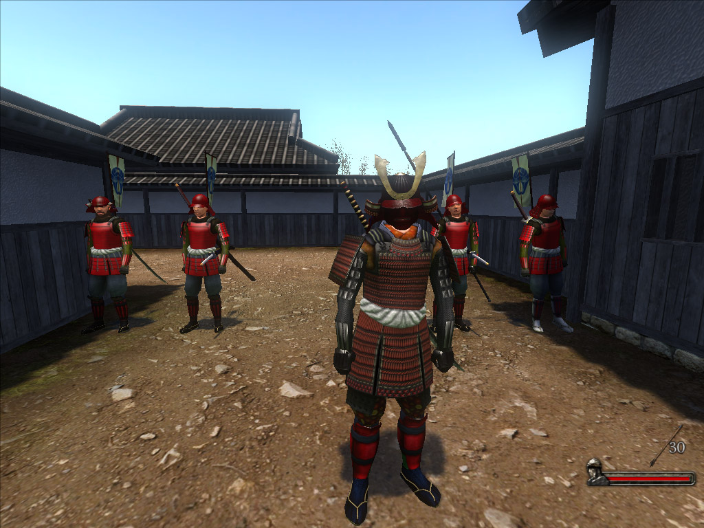
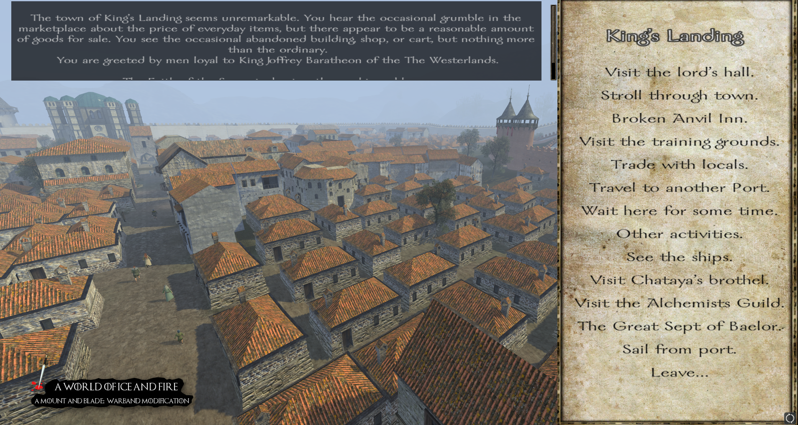

The Community
"Report from the Westfold garrison: Orc movements increase along the Isen. Their scouts avoid direct contact but test our borders daily. Supply lines remain stable, though the loss of two farms south of the ford has reduced grain intake. Riders request reinforcement, twenty spears would hold the line.
Without them, we retreat to Helm’s Gate at the next major assault. Awaiting command."
— Latest field update, Dusk of the Third Age, Middle-Earth.
The game's community has remained strong for over a decade after release thanks to the developers support for player-made content that can be easily integrated into the game without the need of any significant professional experience in programming. This closeness between development and community interaction has resulted in mods that completely alter the game into a multitude of different experiences that cannot otherwise be found anywhere else in the gaming industry.
Thanks to the easy-to-learn modding tools and their extensive documentation, the player can play as a vassal of the elven kingdoms of Lord of the Rings. Or become a wandering ronin in the warring states of medieval Japan. Or pledge allegiance to one of the houses of Westeros from A Song of Ice and Fire. What truly sets the Warband community apart is how it grew from small, individual hobby projects into a vast collective effort spanning thousands of contributors. Many of the most influential mods began as experiments: a handful of new textures, a rebalanced troop tree, or a few custom quests. Over time, these experiments evolved into full-scale reconstructions of entirely different worlds.
Some mods aim for total conversion, transporting players into grand fantasy epics or historical eras far removed from the game's main setting. Others focus on polishing Warband’s core mechanics: smarter AI, deeper politics, expanded diplomacy, or revamped sieges. Because the game’s engine is so flexible, even small modifications can noticeably change how the world behaves. Entire multiplayer communities have grown around these creations, proving that a game released over a decade ago can still reinvent itself in surprising ways.
This constant cycle of creation, iteration, and reinvention has helped Warband outlive many of its contemporaries. The developers provided the tools, but it is the players who built the legacy, expanding a once modest medieval sandbox into a library of experiences shaped by creativity and shared imagination.
Early projects like Custom Settlements and The Eagle and the Radiant Cross began experimenting with Warband’s engine, proving that the game could support large-scale world and gameplay overhauls. Then came Prophesy of Pendor, one of Warband’s earliest and most iconic fantasy conversions, it introduced unique factions, a massive lorebook, custom knighthood orders, and some of the most challenging battles in the modding scene.
These projects would lay the groundwork for The Last Days of the Third Age, which delivered an exceptionally faithful Middle-earth experience, and Brytenwalda, a historical overhaul so polished that it would eventually become the basis for the official Viking Conquest DLC.
1257 AD recreated medieval Europe with an enormous map and hundreds of historically grounded lords. The Floris Mod Pack, released in 2014, refined and unified many community improvements into what many players considered to be the “definitive” enhanced native experience. Warsword Conquest followed a year later, bringing the grimdark, over-the-top world of Warhammer Fantasy to Warband through dozens of factions and monstrous units.
The community continued to diversify in the years that followed. A World of Ice and Fire (2017) delivered a harsh, lore-accurate take on Westeros, while Perisno (2018) offered a brighter high-fantasy world with mythic creatures and friendly accessibility. Multiplayer communities also flourished through Persistent World and later Persistent Kingdoms, enabling players to build towns, trade, wage wars, and establish social hierarchies within living, player-driven servers. Together, these projects form a timeline of creativity, each one expanding Warband’s legacy and ensuring the game’s longevity long after its developers have moved on to other projects.